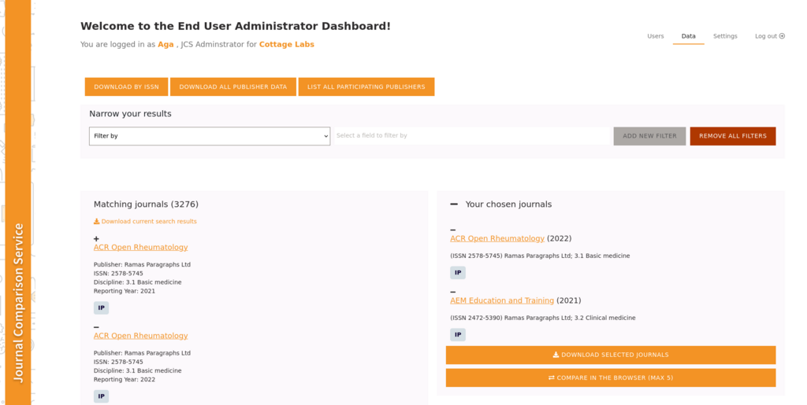

Journal Comparison Service

cOAlition S, a consortium of 25+ funders, as put together an ambitious plan to improve the state of Open Access and encourage more and more publishers to support that route. Cottage Labs provides several services to the consortium, including this tool to allow institutions to explore publisher cost models.
Challenge
cOAlition S has an interest in convincing publishers to move to Open Access models of publishing. To enable institutions to make more informed decisions during negotiations with publishers over Open Access agreements, the coalition wanted to encourage publishers to share information about their cost models. This is a substantial challenge in its own right, and one that the coalition has taken on. Cottage Labs job here was to build a system sufficiently trustworthy to the publishers that they woud be comfortable sharing data that could lead to competition law issues if shared too widely, while at the same time building tools that are actually useful to institutions.
